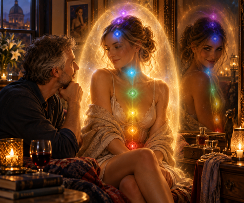

As recently spoken on our romantic, sweet, soft, cute,
stolen moments with you,
while emotionally and physically entwined,
mixing into a twilight of feeling responses,
do I transcend into an altered,
mental and moving sense, state,
unique in experience only with you,
do these passions arouse new warm incandescence’s in my tearful eyes.
And while falling through the moist mists of our luxurious, sumptuous,
deliciously scrumptious time together,
do I have the impression of another female hidden deep within the shadowy,
hidden corners of your divine subconscious mind,
masqueraded by a bemused,
impatient young enchantress,
exasperated on the waiting promise of you,
to seize your wet, warm, exuberant, dusky, succulent, tawdry, fantasy moments.
‘tis a strange white magical spell,
cast by you,
which I fall into an inexplicable trance
and now with you in my loving embrace,
beneath me,
as now I can sense another being within you,
a dark trace of a secret,
inexplicable,
undiscovered woman I can find, sensuous, homely,
extremely meticulous
and daring on the outrageous.
Strange as it is a different creature from the one I originally bonded with,
it is not like I ever will now know either person beneath me,
I can only wonder of your origins,
not that I am scared or fazed by this wondrous discovery,
nay the reverse,
as I hardly know your true,
true concealed self,
and yet there is a new woman within you,
wanting to be discovered who is mysterious, oblique and possibly very serious,
or maybe quite frivolous,
desperate to lose all control
and be swept away with fervent passions deep,
darkly lurking in her imprisoned soul,
released only by taking full sensual command,
Not that the lady I met is know,
of course not,
though there is another twin,
which held deep inside of you,
with a different form and reason,
and you talk as if you know I have found something which is not new to you,
I do not think it is a repressed self of you,
however, my intuition of you as so far not proved to be wrong
and what I ken is a sensation of a wanton exploration
and of depths you have secretly wanted to plummet
and as yet dare not stomach,
but arose from gentle warm, desired sensations
I can conceive of mischievous sexual role plays,
where we define our ground rules,
we start with an erotic opportunity
and everything we can imagine can happen,
we must have code words to slow or stop the pace,
or even to send it on a hectic forceful,
naughty and seductive pace,
taking us to a higher ecstasy of pleasure, and leisure.
This could be green for more, harder, faster,
more anger or pain or humiliation or carefree sensitive wet permeation,
amber for slow down that is going too far now
and of course red for stop as the games are too much,
lets talk of politics and of quite reservations,
of distant satellite destinations
or of café’s with chocolate restorations,
Do you think you can play with me such a salacious and seductive game?
Where I or you is tied and bound to obey,
while the other takes control
and uses all their animal power to inflict all the carnal, juicy, words
and actions for the others frantic needy indoctrination and filthy penetration?
To produce mouth-watering delectable orgasms.
Could it be such a divine release to let the other take us to a place of frenzied dirty wicked fun,
which is indeed only designed to release the sexual flirts,
smooth deserts
and the ultimate expression of an unbounded free,
silky velvet and steamy sexy love?